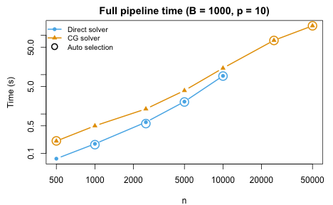
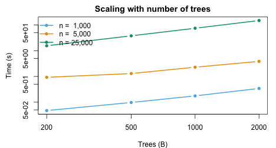
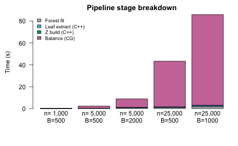
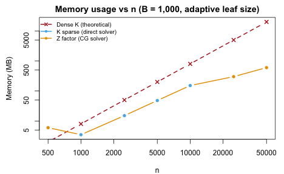

Overview
This vignette benchmarks the forestBalance pipeline to
characterize how speed and memory scale with sample size
()
and number of trees
().
The pipeline has four stages, each optimized:
-
Forest fitting
(
grf::multi_regression_forest) – C++ via grf. -
Leaf node extraction
(
get_leaf_node_matrix) – C++ via Rcpp. -
Indicator matrix construction
(
leaf_node_kernel_Z) – C++ via Rcpp, building CSC sparse format directly without sorting. -
Weight computation (
kernel_balance) – adaptive solver:- Direct: sparse Cholesky on treated/control sub-blocks. Preferred for smaller problems.
- CG: conjugate gradient using the factored representation. No kernel matrix is formed. Preferred for large or dense kernels.
Mathematical background
The kernel energy balancing system
Given a kernel matrix and a binary treatment vector with treated and control units, the kernel energy balancing weights are obtained by solving the linear system where is the modified kernel and is a right-hand side vector determined by a linear constraint.
The modified kernel is defined element-wise as
A critical structural observation is that whenever : the treated–control cross-blocks are identically zero. Therefore is block-diagonal: where is the treated sub-block and is the control sub-block.
The right-hand side vector has a similarly separable structure. Writing (the row sums of ), we have
The full system decomposes into two independent sub-problems:
- Treated block: solve of size ,
- Control block: solve of size ,
where and are the constraint-adjusted right-hand sides for each group (each requiring two preliminary solves to determine the Lagrange multiplier).
The kernel factorization
The proximity kernel is , where is a sparse indicator matrix (, total leaves across all trees). Each row of has exactly nonzero entries (one per tree), so has nonzeros total. The matrix is constructed in C++ directly in compressed sparse column (CSC) format, avoiding the overhead of R’s triplet sorting.
Direct solver (block Cholesky)
For moderate
,
we form the sub-block kernels explicitly:
where
and
.
Each sub-block is computed via a sparse tcrossprod. The
linear systems are then solved by sparse Cholesky factorization.
Computational Cost: for the two sub-block cross-products (where is the average leaf size), plus for sparse Cholesky (in the best case).
CG solver (matrix-free)
For large , forming and becomes expensive. The conjugate gradient (CG) solver avoids forming any kernel matrix by operating on the factored representation. To solve CG only needs matrix–vector products of the form each costing via two sparse matrix–vector multiplies. The same applies to the control block with .
Here, the memory use is for alone, versus for the kernel. Each CG iteration costs (where is the group size). Convergence typically requires 100–200 iterations, independent of , so the total cost is . The six required solves (three per block) are independent and each converges in a similar number of iterations.
Computational Cost: where . This scales linearly in both and , making it the preferred solver for large problems.
End-to-end timing
We benchmark the full forest_balance() pipeline (forest
fitting, leaf extraction, Z construction, and weight computation) across
a range of sample sizes up to
with
trees. To show the effect of solver choice, we run each
with both solver = "direct" and solver = "cg"
where feasible:
n_vals <- c(500, 1000, 2500, 5000, 10000, 25000, 50000)
B <- 1000
p <- 10
bench <- do.call(rbind, lapply(n_vals, function(nn) {
set.seed(123)
dat <- simulate_data(n = nn, p = p)
# Auto (default)
t_auto <- system.time(
fit_auto <- forest_balance(dat$X, dat$A, dat$Y, num.trees = B)
)["elapsed"]
# Direct (skip for n > 10000)
if (nn <= 10000) {
t_dir <- system.time(
fit_dir <- forest_balance(dat$X, dat$A, dat$Y, num.trees = B,
solver = "direct")
)["elapsed"]
} else {
t_dir <- NA
}
# CG (run for all n)
t_cg <- system.time(
fit_cg <- forest_balance(dat$X, dat$A, dat$Y, num.trees = B,
solver = "cg")
)["elapsed"]
data.frame(n = nn, trees = B,
auto = t_auto, direct = t_dir, cg = t_cg,
auto_solver = fit_auto$solver)
}))| n | Trees | Direct (s) | CG (s) | Auto picks |
|---|---|---|---|---|
| 500 | 1000 | 0.07 | 0.20 | cg |
| 1000 | 1000 | 0.17 | 0.50 | direct |
| 2500 | 1000 | 0.62 | 1.34 | direct |
| 5000 | 1000 | 2.06 | 3.95 | direct |
| 10000 | 1000 | 9.30 | 14.63 | direct |
| 25000 | 1000 | – | 74.56 | cg |
| 50000 | 1000 | – | 174.63 | cg |

The circled points show which solver "auto" selects at
each
.
The switchover depends on both the per-fold sample size and the adaptive
min.node.size (which creates denser kernels at higher
).
Scaling with number of trees
tree_vals <- c(200, 500, 1000, 2000)
n_test <- c(1000, 5000, 25000)
tree_bench <- do.call(rbind, lapply(n_test, function(nn) {
do.call(rbind, lapply(tree_vals, function(B) {
set.seed(123)
dat <- simulate_data(n = nn, p = 10)
t <- system.time(
fit <- forest_balance(dat$X, dat$A, dat$Y, num.trees = B)
)["elapsed"]
data.frame(n = nn, trees = B, time = t)
}))
}))| n | Trees | Time (s) |
|---|---|---|
| 1000 | 200 | 0.05 |
| 1000 | 500 | 0.10 |
| 1000 | 1000 | 0.17 |
| 1000 | 2000 | 0.34 |
| 5000 | 200 | 0.92 |
| 5000 | 500 | 1.29 |
| 5000 | 1000 | 2.28 |
| 5000 | 2000 | 3.86 |
| 25000 | 200 | 15.58 |
| 25000 | 500 | 37.93 |
| 25000 | 1000 | 74.78 |
| 25000 | 2000 | 149.45 |

The pipeline scales approximately linearly in both and .
Pipeline stage breakdown
The following experiment profiles each stage of the pipeline individually to show where time is spent at different scales:
breakdown <- do.call(rbind, lapply(
list(c(1000, 500), c(5000, 500), c(5000, 2000),
c(25000, 500), c(25000, 1000)),
function(cfg) {
nn <- cfg[1]; B_val <- cfg[2]
set.seed(123)
dat <- simulate_data(n = nn, p = 10)
mns <- max(20L, min(floor(nn / 200) + 10, floor(nn / 50)))
# 1. Forest fitting
t_fit <- system.time({
resp <- scale(cbind(dat$A, dat$Y))
forest <- grf::multi_regression_forest(dat$X, Y = resp,
num.trees = B_val, min.node.size = mns)
})["elapsed"]
# 2. Leaf extraction (Rcpp)
t_leaf <- system.time(
leaf_mat <- get_leaf_node_matrix(forest, dat$X)
)["elapsed"]
# 3. Z construction (Rcpp)
t_z <- system.time(
Z <- leaf_node_kernel_Z(leaf_mat)
)["elapsed"]
# 4. Weight computation (kernel_balance)
t_bal <- system.time(
w <- kernel_balance(dat$A, Z = Z, num.trees = B_val, solver = "cg")
)["elapsed"]
data.frame(n = nn, trees = B_val, mns = mns,
fit = t_fit, leaf = t_leaf, Z = t_z, balance = t_bal,
total = t_fit + t_leaf + t_z + t_bal)
}
))| n | Trees | mns | Forest fit (s) | Leaf extract (s) | Z build (s) | Balance (s) | Total (s) |
|---|---|---|---|---|---|---|---|
| 1000 | 500 | 20 | 0.03 | 0.02 | 0.003 | 0.21 | 0.26 |
| 5000 | 500 | 35 | 0.17 | 0.10 | 0.013 | 2.02 | 2.30 |
| 5000 | 2000 | 35 | 0.64 | 0.41 | 0.098 | 7.73 | 8.87 |
| 25000 | 500 | 135 | 1.01 | 0.51 | 0.073 | 41.74 | 43.33 |
| 25000 | 1000 | 135 | 1.87 | 1.00 | 0.180 | 82.89 | 85.93 |

At small , forest fitting and the balance solver take similar time. At large , the CG solver dominates — its cost grows with the number of iterations and the sparse matrix–vector product size. The C++ stages (leaf extraction and construction) remain a small fraction throughout.
Memory usage
When the direct solver is used, the kernel is formed as a sparse matrix. For the CG solver, only the sparse indicator matrix is stored. The table below shows the actual memory usage compared to the theoretical dense kernel:
mem_data <- do.call(rbind, lapply(
c(500, 1000, 2500, 5000, 10000, 25000, 50000),
function(nn) {
set.seed(123)
dat <- simulate_data(n = nn, p = 10)
B_val <- 1000
mns <- max(20L, min(floor(nn / 200) + ncol(dat$X), floor(nn / 50)))
fit_forest <- multi_regression_forest(
dat$X, scale(cbind(dat$A, dat$Y)),
num.trees = B_val, min.node.size = mns
)
leaf_mat <- get_leaf_node_matrix(fit_forest, dat$X)
Z <- leaf_node_kernel_Z(leaf_mat)
z_mb <- as.numeric(object.size(Z)) / 1e6
# Kernel sparsity (skip forming K for very large n)
if (nn <= 10000) {
K <- leaf_node_kernel(leaf_mat)
pct_nz <- round(100 * length(K@x) / as.numeric(nn)^2, 1)
k_mb <- round(as.numeric(object.size(K)) / 1e6, 1)
} else {
pct_nz <- NA
k_mb <- NA
}
n_fold <- nn %/% 2
auto_solver <- if (n_fold > 5000 || mns > n_fold / 20) "cg" else "direct"
dense_mb <- round(8 * as.numeric(nn)^2 / 1e6, 0)
data.frame(n = nn, mns = mns, pct_nz = pct_nz,
sparse_MB = k_mb, Z_MB = round(z_mb, 1),
dense_MB = dense_mb, solver = auto_solver)
}
))| n | mns | Solver | K % nonzero | Stored | Actual (MB) | Dense K (MB) | Actual / Dense |
|---|---|---|---|---|---|---|---|
| 500 | 20 | cg | 39.4% | Z (factor) | 6.0 | 2 | 300% |
| 1000 | 20 | direct | 28.8% | K (sparse) | 3.5 | 8 | 43.8% |
| 2500 | 22 | direct | 20.1% | K (sparse) | 15.1 | 50 | 30.2% |
| 5000 | 35 | direct | 16% | K (sparse) | 48.1 | 200 | 24% |
| 10000 | 60 | direct | 12.6% | K (sparse) | 151.7 | 800 | 19% |
| 25000 | 135 | cg | – | Z (factor) | 300.4 | 5000 | 6% |
| 50000 | 260 | cg | – | Z (factor) | 600.3 | 20000 | 3% |

At , a dense kernel would require 19 GB. The CG solver stores only the matrix, using a small fraction of this.
Summary
- The full
forest_balance()pipeline scales to with 1,000 trees. - All computationally intensive steps are in compiled code: C++ for leaf extraction and construction (Rcpp), BLAS for sparse matrix operations, and CHOLMOD for sparse Cholesky.
- The adaptive
min.node.sizeheuristic adjusts leaf size to both and , creating denser kernels than the old default of 10. - The solver switchover between direct and CG depends on both the
per-fold sample size and the kernel density. The
"auto"setting handles this transparently. - The pipeline scales approximately linearly in both and .